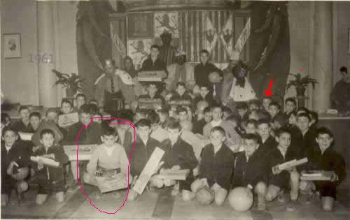

En la foto que envió Luis Barreriro aparece mi hermano Pedro que es el que rodeo con un círculo rojo. Mi hermano estuvo solo ese año en Quintana del Puente y, casualidades de la vida, su suegro hizo la mili en el destacamento de soldados que mantenían la Colonia.
El se ha sorprendido cuando ha visto esta web y parece que la visita alguna vez.Espero que se anime y os mande algunas letras.
 |
volver